第 2 轮：思考档样式、服务商详情、网络与角色页
思考档的分段按钮用哪种样子？
推荐 C 浮起的纸：当前档是一小块浮起的面板色、字用强调色，不再是整块蓝；跟随角色时只留细框。面板里最显眼的不该是思考档。
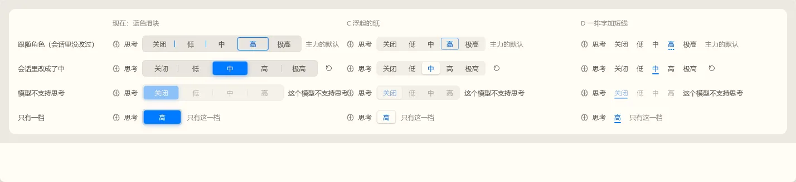
保持现在的蓝色滑块
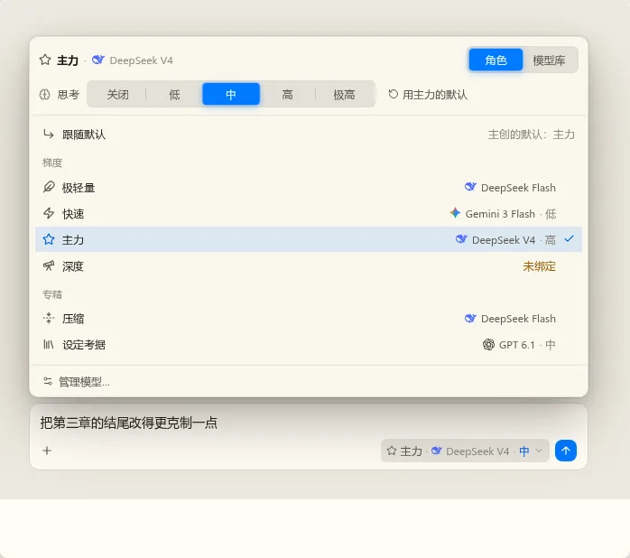
C 浮起的纸
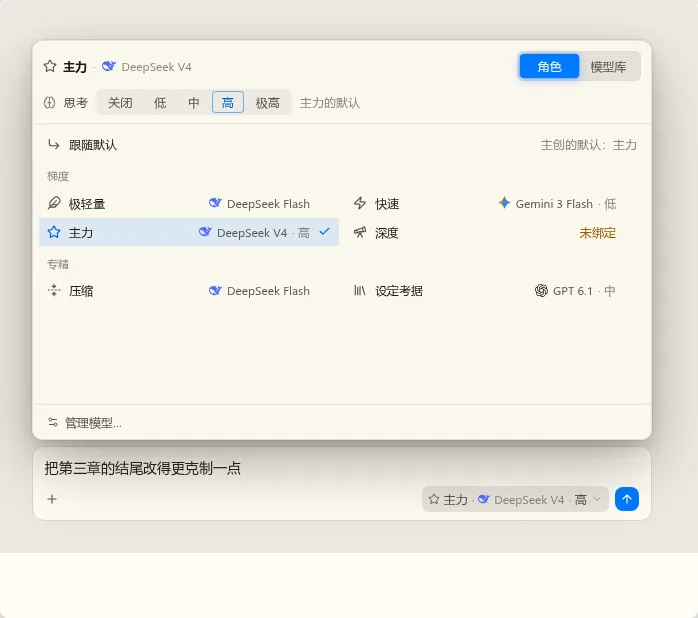
D 一排字加短线
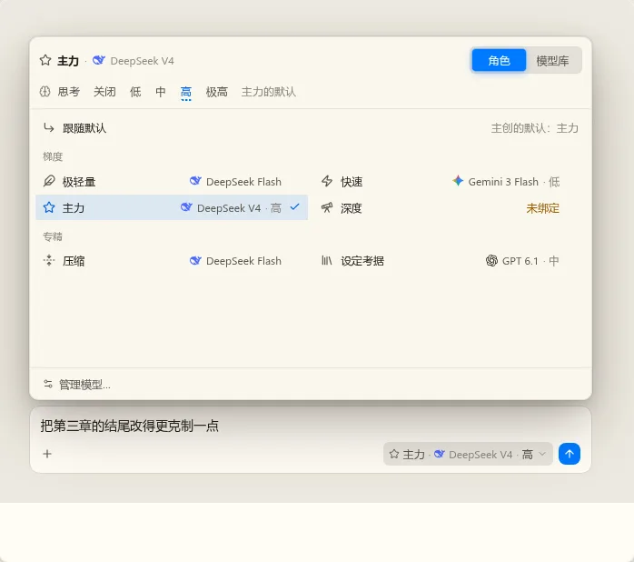
服务商详情按这一稿做？
推荐同意：结构沿用现在的页面，只加你要的几处。
| 标题 | 点图标换图标（内置、上传、首字母，可恢复模板的）；名称就地改；“复制一份”建同模板的第二家 |
| 协议 | 每家都能改（原来只有自定义的能改）；旁边“检测协议”，结果就地列出四种协议的通没通、耗时或错误，点“用这个”才改 |
| 接口地址 | 改过时出现“恢复模板地址” |
| 高级 | 新增代理：跟随应用（默认）、跟随系统、自定义、直连 |
| 模型 | “重新拉取”每家都有；标题旁写模型个数与目录更新时间；新增开关“服务商新出的模型自动加入”（默认开，关掉就是加入那一刻的固定列表） |
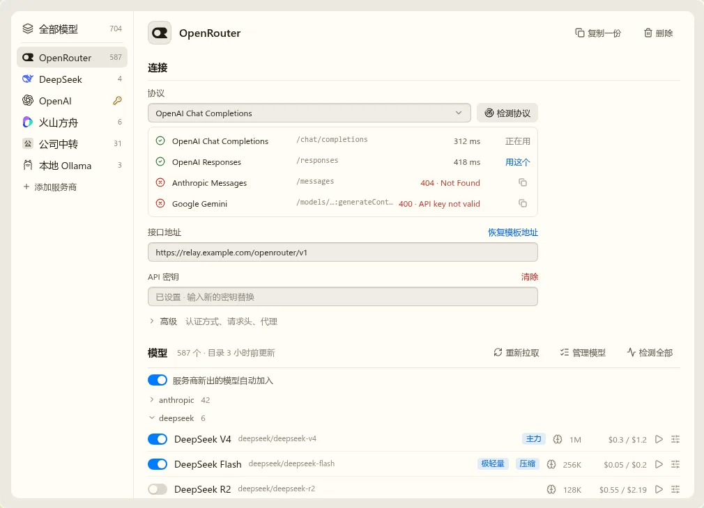
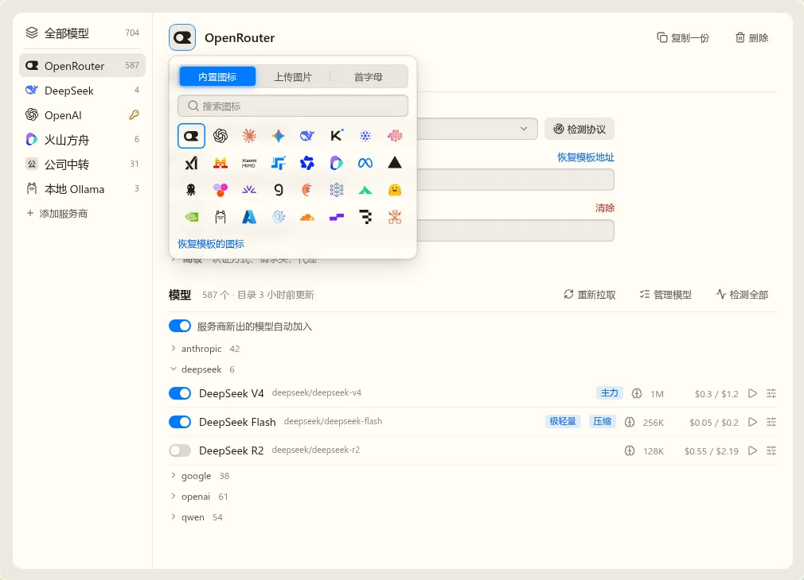
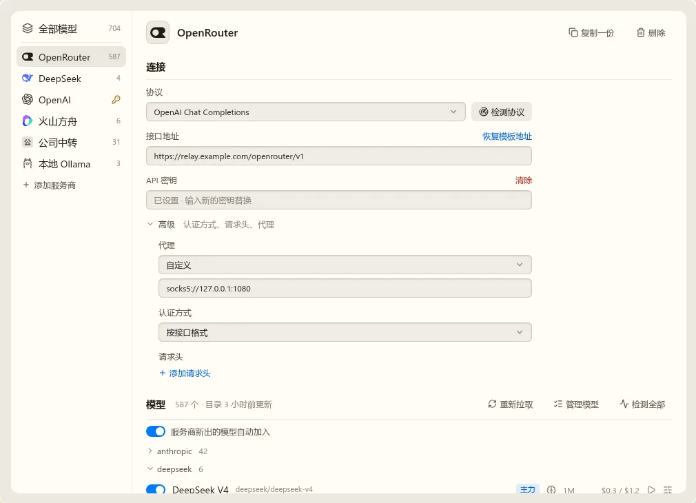
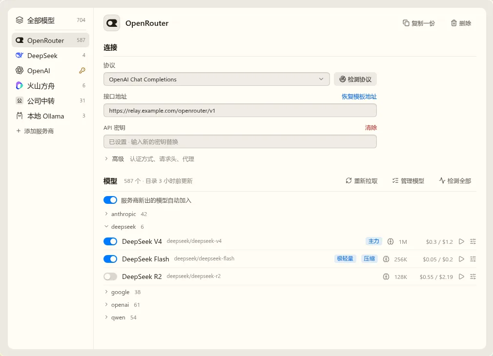
“网络”分区按这一稿做？
推荐同意：跟随系统时写出实际用的是哪个代理、从哪读到的，用错了一眼能看出；“测试”走代理请求一次，报出口 IP 与耗时。“自动更新模型目录”也放这里，因为它是外连。
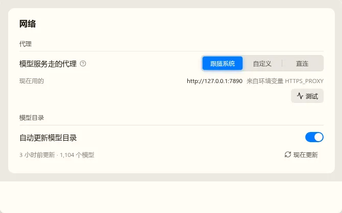
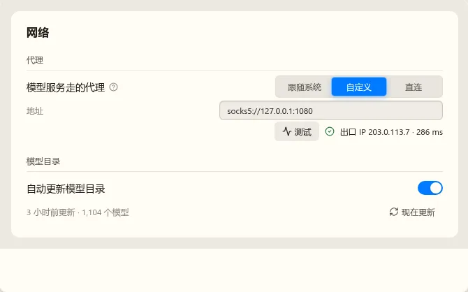
角色页的思考档按这一稿做？
推荐同意：模型右边一列思考档，选项跟着绑定的模型走；第一项“跟随模型”就是不设。没绑定、模型不支持思考时停用并写在框里；没写档位的给通用几档，旁边“?”说明。
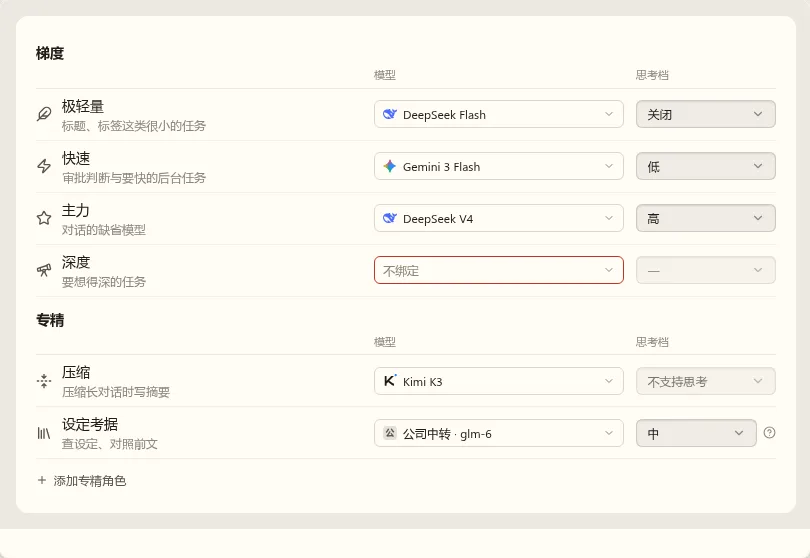
已定
- 服务商只有一种：都从模板复制，名称、协议、地址、图标都能改
- 添加后加入全部对话模型，几百个也加；设置里只记移除和改过的
- 在线目录默认开，给“自动更新模型目录”开关
- 图标用 @lobehub/icons-static-svg；自定义支持上传与首字母方块
- 代理：应用级在“网络”分区、服务商级在“高级”；跟随系统、自定义、直连
- 思考档：会话里选的 > 角色上设的 > 模型默认；控件不再隐藏
- 协议检测照 Magpie 并行发四种极小请求
- 选择器里的角色两列紧凑行（第 1 轮）
- 思考档用分段按钮，样式再调（第 1 轮）
- 气泡这档的阴影整体调轻（第 1 轮）
- “添加服务商”分组、组内多列的行（第 1 轮）